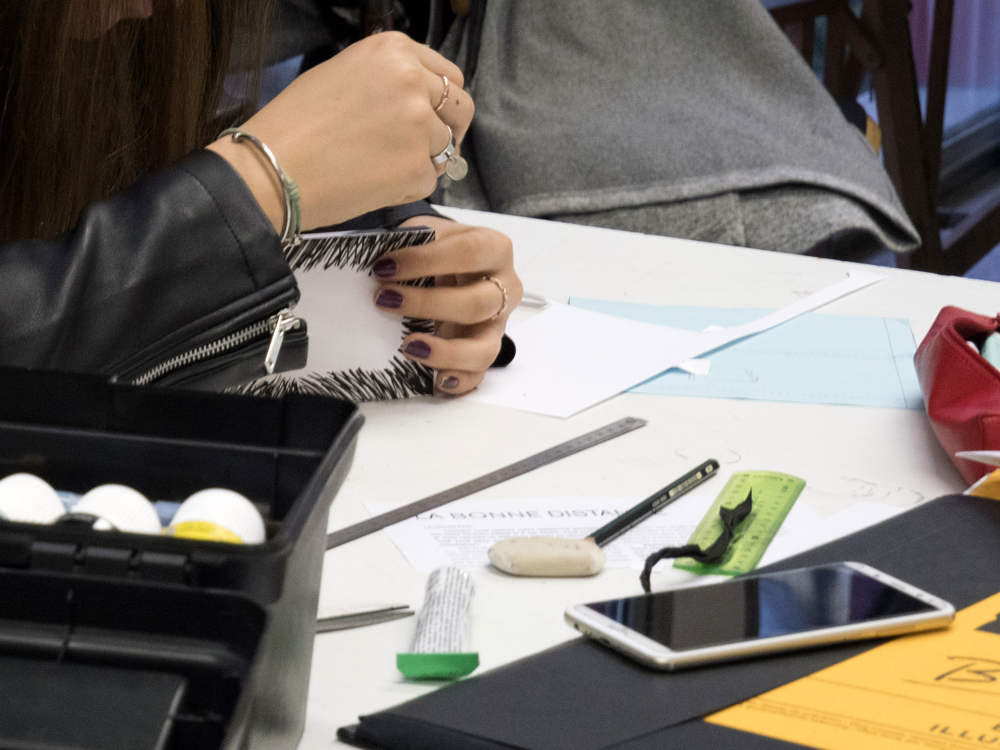
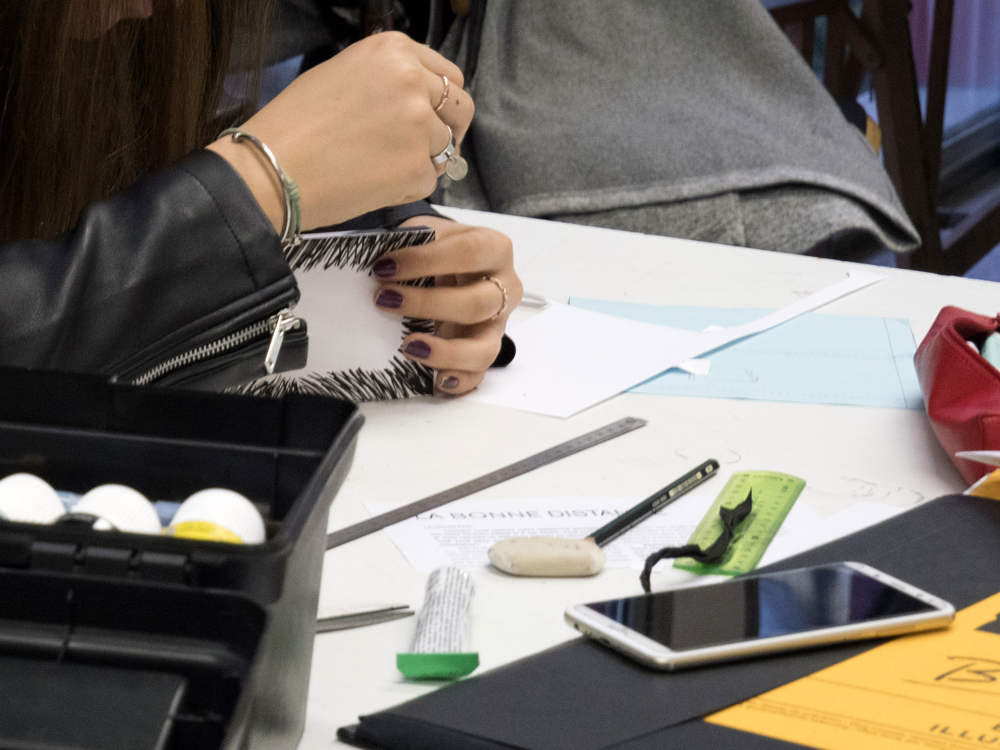
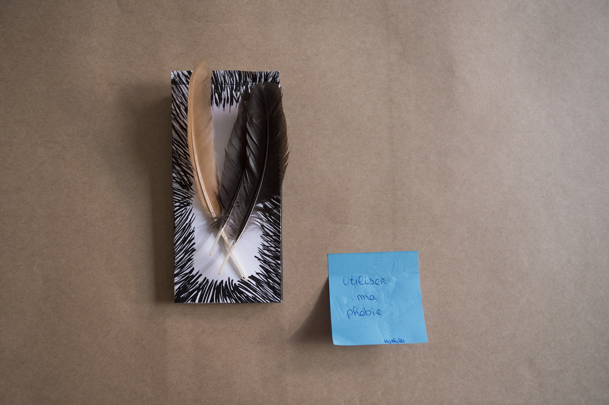
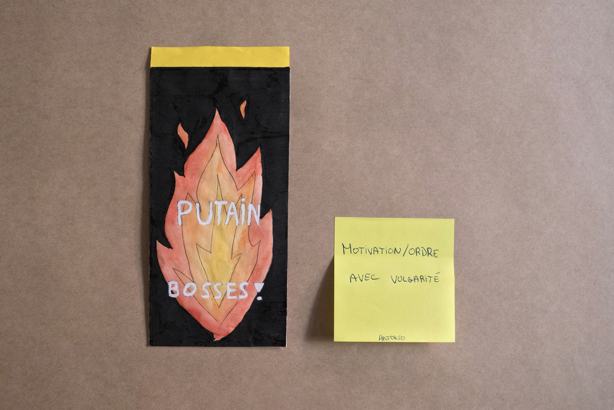
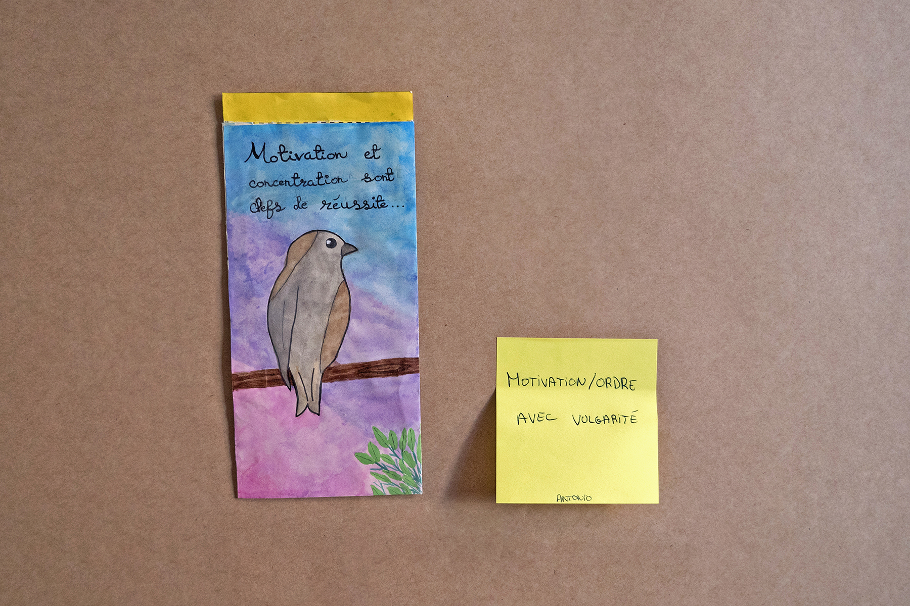
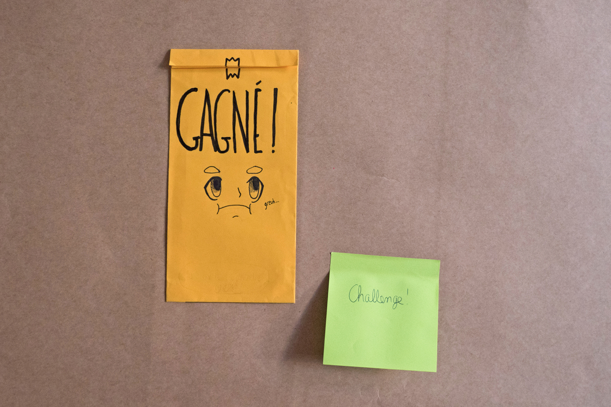

Pochettes vierges

Productions d'élèves de seconde
   


Kit d'atelier "à distance"
L'idée de cet atelier est partie d'une étude prouvant que la simple présence de notre téléphone portable
sur notre bureau réduisait amplement nos performances cognitives.
Le but de cet atelier est de sensibiliser les adolescents à cette problématique
en leur proposant de créer une barrière en papier qui les séparera de leur téléphone.
Cette barrière est à la fois physique puisqu'elle limite les usages compulsifs et la vue de l'objet
si tentant, mais également psychologique puisque l'adolescent fait le choix de mettre son téléphone
à part lors d'un moement de travail. Cet atelier permet à l'adolescent de personnaliser sa pochette
en fonction de ses propres besoins et de son rapport à son téléphone portable.
Kit d'atelier mis à disposition les collèges et lycées qui souhaitent
mettre en place cet atelier. Il est composé d'un livret pédagogique qui a pour but de guider
l'adolescent dans la réalisation de sa pochette, affiche personnalisable et patrons.
Vous souhaitez recevoir un PDF du livret pour mener cet atelier à la maison ou dans une association, un lycée, un collège, etc ? Contactez-moi par e-mail : le.gall.laurene.daa[at]gmail.com
· Projet de diplôme de DSAA 1/3.
· Livret pédagogique — Affiche
· Format a5, 16 pages — Format A3
· 2019